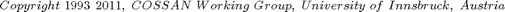
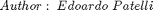
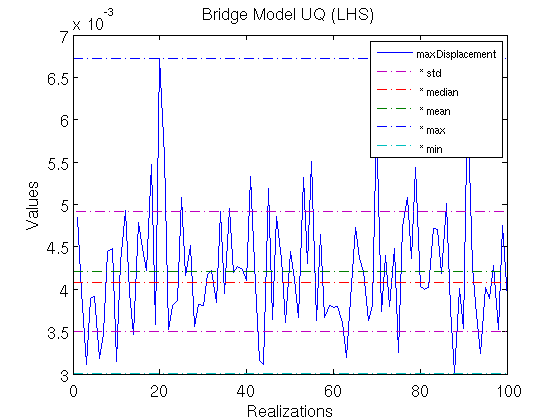
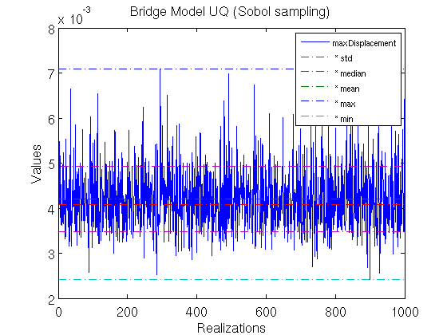
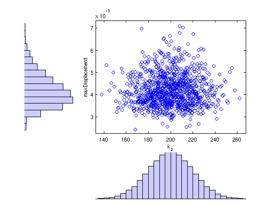

Contents
TutorialBridgeModelUncertaintyQuantification
In this tutorial a simple uncertainty quantification of a mechanical model of a long bridge is presented.
See Also http://mechanik.uibk.ac.at/wiki/index.php/BridgeModel
 
% Reset the random number generator in order to obtain always the same results. % DO NOT CHANGE THE VALUES OF THE SEED CossanX.resetRandomNumberGenerator(46354)
Requirements
This tutorial needs the mechanical model defined in the tutorial TutorialBridgeModel
assert(logical(exist('XmodelBridge','var')),'COSSANX:Tutorials', ... 'Please run first the tutorial TutorialBridgeModel\n\n run TutorialBridgeModel')
Perform Uncertainty Quantification using a quasi Monte Carlo methods
The lating hypercube sampling method is used to generate samples in the multidimensional input space.
Xlhs=LatinHypercubeSampling('Nsamples',100); % Perform simulation XoutLHS=Xlhs.apply(XmodelBridge); % Plot statistics of the output f1=XoutLHS.plotData('Sname','maxDisplacement','Stitle','Bridge Model UQ (LHS)','Nfontsize',14); % Show statistics of the output Mstatistics=XoutLHS.getStatistics('Sname','maxDisplacement'); % Show Min, Max, Mean, median and std for maxDisplacement fprintf('* Min : %e\n* Max : %e\n* Mean : %e\n* Median: %e\n* Std : %e\n',... Mstatistics(:)) % Validate Solution assert(abs(Mstatistics(3)- 4.20537e-03)<1e-6,... 'CossanX:Tutorials:TutorialBridgeModel', ... 'Nominal sulution does not match Reference Solution.')
calling lhsdesign * Nsamples: 100 * Nrv: 123 * iteration: 5 * criterion: none * smooth: on [Status:Evaluator ] * Processing solver 1/1 [Simulation:exportResults] Writing partial results (SimulationData_batch_1_of_1) on the folder: /home/ep/workspace/COSSAN-X_SVN/COSSANXengine/examples/Tutorials/BridgeModel/20110527T195424 [Simulation:exportResults] Batch #1 written in 0.26487 [Simulation:exportResults] Results stored in the folder: /home/ep/workspace/COSSAN-X_SVN/COSSANXengine/examples/Tutorials/BridgeModel/20110527T195424/SimulationData_batch_1_of_1 Maximum no. of samples reached. Samples computed 100; Maximum allowed samples: 100 * Min : 3.001865e-03 * Max : 6.726050e-03 * Mean : 4.205373e-03 * Median: 4.082637e-03 * Std : 7.068503e-04
Use sobol sampling
Xss=SobolSampling('Nsamples',1000); % Perform simulation XoutSS=Xss.apply(XmodelBridge); % Plot statistics of the output f2=XoutSS.plotData('Sname','maxDisplacement','Stitle','Bridge Model UQ (Sobol sampling)','Nfontsize',14); Mstatistics=XoutLHS.getStatistics('Sname','maxDisplacement'); % Show Min, Max, Mean, median and std for maxDisplacement % Show Min, Max, Mean, median and std for maxDisplacement fprintf('* Min : %e\n* Max : %e\n* Mean : %e\n* Median: %e\n* Std : %e\n',... Mstatistics(:))
[Status:Evaluator ] * Processing solver 1/1 [Simulation:exportResults] Writing partial results (SimulationData_batch_1_of_1) on the folder: /home/ep/workspace/COSSAN-X_SVN/COSSANXengine/examples/Tutorials/BridgeModel/20110527T195431 [Simulation:exportResults] Batch #1 written in 0.53664 [Simulation:exportResults] Results stored in the folder: /home/ep/workspace/COSSAN-X_SVN/COSSANXengine/examples/Tutorials/BridgeModel/20110527T195431/SimulationData_batch_1_of_1 Maximum no. of samples reached. Samples computed 1000; Maximum allowed samples: 1000 * Min : 3.001865e-03 * Max : 6.726050e-03 * Mean : 4.205373e-03 * Median: 4.082637e-03 * Std : 7.068503e-04
Scatter plot
From the scatter plots it is possible to see if a correlation between some input factors and the maximum diplacement exist. However, this task can be performed in a more clear way using the Sensitivity methods.
Mdata=XoutSS.getValues('Cnames',{'k_2','maxDisplacement'}); f3=figure; scatterhist(Mdata(:,1),Mdata(:,2)) xlabel('k_2'); ylabel('maxDisplacement');
Close figures
close(f1),close(f2),close(f3)
Global Sensitivity Analysis
This tutorial continues with the optimization section See Also: TutorialBridgeModelGlobalSensitivityAnalysis.html
% echodemo TutorialBridgeModelGlobalSensitivityAnalysis